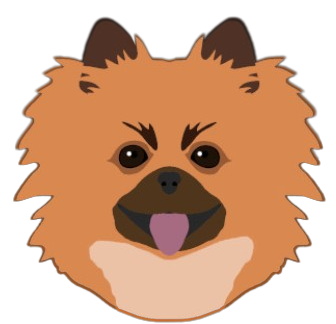
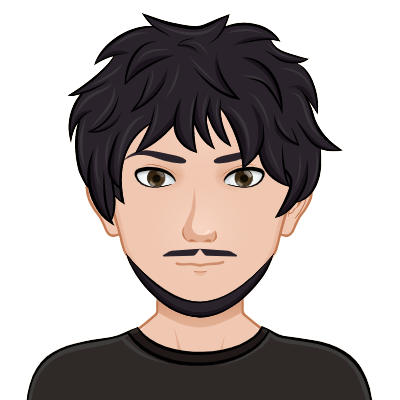

Our Team
Joca
Project Manager and Lead Designer
Overview
The undisputable leader of our team, Joca, as most dogs, doesn't have any formal education or the skills needed to develop games. You are probably wondering how he was able to become a project manager after all. Well, he is a good boy and is always bossing people around so I couldn't really say no to him.
Skills
- Master of spinning in circles when excited;
- Really understands how to get people to do what he wants;
- Able to bark non-stop for long periods of time;
- Will always receive us when we get home;
- Can get to any food dropping on the floor in 0.01 seconds;
- Is a really good boi (not really a skill but he insisted to have it here).
Guilherme
Developer and Artist
Overview
The one that actually gets things done at Joca Games, Guilherme is a full-stack developer striving to learn as much as possible, always delving deeper into the languages and tools he already knows but also open to exploring the unknown.
Skills
- HTML and CSS;
- JavaScript;
- C#;
- ReactJS;
- ReactNative;
- .NET Framework;
- MySQL.